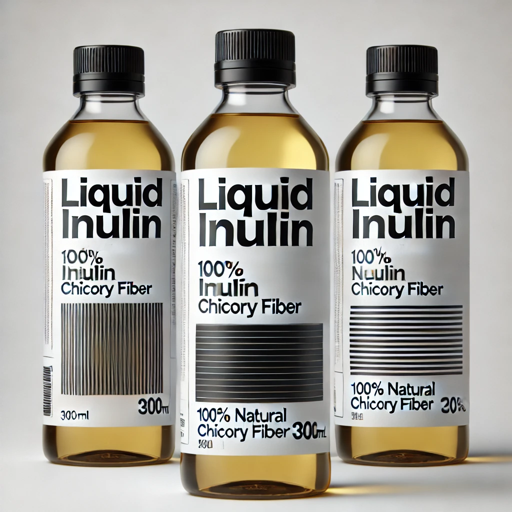

Our Products
Hibiscus Inulin Sweetener

- Made from organic hibiscus and inulin
- Low-glycemic sweetener for healthy lifestyles
- Vibrant color & naturally refreshing taste
- Perfect sugar substitute for baking & beverages

- Boosts dietary fiber intake
- Rich in antioxidants
- Easy to blend in smoothies
- Supports healthy digestion

- Developed using premium hibiscus sources
- Lightly sweet, tangy flavor profile
- Promotes gut health
- Combines well with various recipes
Liquid Inulin

- Convenient liquid form for easy blending
- Derived from chicory root fiber
- Lightly sweet taste with minimal calories
- Fantastic prebiotic benefits

- Helps maintain a healthy gut microbiome
- Ideal for smoothies, sauces, and dressings
- Highly soluble in hot or cold beverages
- Provides subtle sweetness without sugar spikes

- Suitable for vegan and keto-friendly diets
- Smooth texture; easily integrates into recipes
- No aftertaste or grittiness
- Trusted source for daily fiber needs